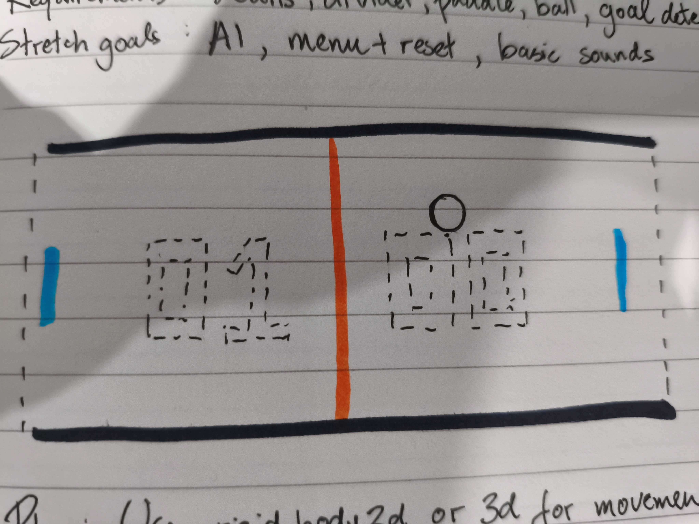

Start with Basic
Many always said that if you want to be good at something, master the basic. Is it true? I am here to prove it right (or wrong?)
What To Do?
I found the link
and the first thought was this is gonna be easy (overestimating one self), but I discover many challenge, whether they are easy problems or easier problems. I'm trying to not depend on AI help, i only take advantage of it, so I used it to replace reading the documentation, but I try to think about game logic using my mighty logic.
Design
As I tried to pretend that I am an organized and good-planner guy, I drew something before doing it (which I could just not do but it looks cool thou)

After many years of watching tutorials (I am a professional Tutorial watcher), I try to build stuff without any help. I couldn't start, until 10 minutes later when I just decided that I must think I am a good Game Developer. So, I realize our mind is who we are. ??. ??? The biggest challenge for me is to decide how the AI move (normal AI, not that bla bla AGI LLM jackson Huang stuff) so I just decide simple movement from AI, which is just go the y position of the ball when it hits the middle while moving randomly whether middle-up or middle-down if it is in player side. And somehow, like magic, it looks intelligent (for me).
#YOU CAN PLAY THISSSSS
Update Later
Polish and make it better and cooler later, too lazy right now
← Back to all notes